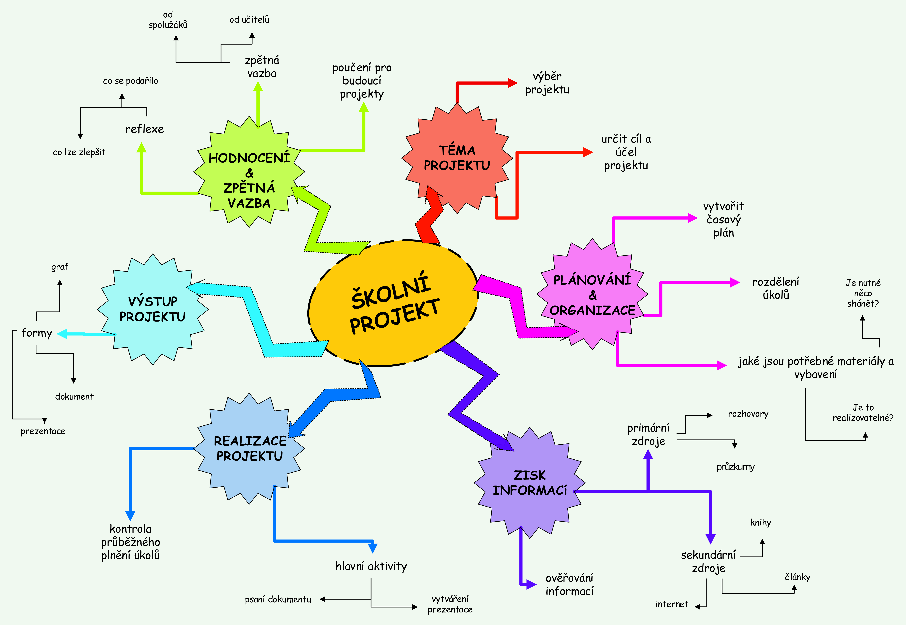

Systémové myšlení je způsob uvažování, který se zaměřuje na pochopení, jak jednotlivé části nějakého systému spolupracují a jak jsou propojené. Místo toho, abychom se soustředili jen na jednotlivé prvky nebo události, snažíme se vidět větší celek – tedy celý systém. Tento způsob myšlení nám pomáhá lépe porozumět složitým problémům, identifikovat jejich příčiny a najít efektivní řešení. Příklady systémů, které lze zkoumat pomocí systémového myšlení, zahrnují lidské tělo, ekosystémy, výrobní linky nebo třeba počítače.
- Ve zdravotnictví se při snaze zabránit opakovaným hospitalizacím pacientů uplatňuje systémové myšlení. Poskytovatelé zdravotní péče se nezaměřují pouze na individuální péči o pacienty, ale zohledňují širší souvislosti. To zahrnuje vzdělávání pacientů, podporu po propuštění, komunikaci mezi zdravotníky a přístup k následné péči.
- Dalším příkladem použití systémového myšlení je u automobilu: automobil je složitý systém, který se skládá z mnoha částí, jako je motor, brzdy, převodovka či palivový systém. Systémové myšlení nám říká, že když se porouchá jedna část, může to ovlivnit celý automobil. Například problém s motorem může způsobit, že auto nebude správně fungovat, i když všechny ostatní části jsou v pořádku.
- I v ekosystému lze využít systémové myšlení. Představte si les jako systém. Stromy, zvířata, voda, půda a vzduch jsou propojené. Pokud zmizí například jeden druh zvířete, může to způsobit změny v potravním řetězci, což ovlivní i další druhy, a tím celý ekosystém. Systémové myšlení nám umožňuje pochopit, jak jsou tyto složky závislé na sobě navzájem.
- I skupinový školní projekt můžeme chápat jako systém. Každý člen týmu má určitou roli a pokud někdo nesplní svou část práce, ovlivní to výsledek celého týmu. Úspěch projektu závisí na tom, jak efektivně všichni spolupracují.

Proč je důležité brát v úvahu celé propojení systémů, místo
soustředění se pouze na jednotlivé komponenty?
Zaměření se pouze na komponenty je jako snažit se pochopit auto zkoumáním samotného motoru, aniž bychom braliv úvahu
převodovku, kola, řízení nebo palivový systém.
Systémové myšlení je nezbytně nutné použít pro pochopení toho, jak auto funguje.
Systémové myšlení je nezbytně nutné použít pro pochopení toho, jak auto funguje.
Co by se stalo, kdybychom zapomněli na propojení mezi částmi
systému při řešení velkých problémů, jako je například zdraví populace?
Ignorování propojení při řešení zdraví populace by vedlo k drahým, neefektivním a nespravedlivým řešením, která by léčila jen příznaky
a často by vytvářela nové problémy.
Jaké výhody přináší systémové myšlení ve zdravotnictví?
Systémové myšlení ve zdravotnictví zlepšuje péči a efektivitu tím, že se zaměřuje na vzájemné propojení všech jeho částí – například
zásadního propojení mezi fyzickým a psychickým stavem pacienta – a zaměřuje se na řešení příčin, ne jen příznaků.
Kde všude lze využít systémové myšlení?
Systémové myšlení nachází uplatnění v mnoha oblastech, jako například v medicíně (personalizovaná léčba,
pochopení komplexních onemocnení), biotechnologiích (metabolické inženýrství, syntetická biologie), ekologii
(modelování ekosystémů), zemědělství (optimalizace výnosů), farmakologii (vývoj léčiv),
informatice (bioinformatika, umělá inteligence) či ekonomii (modelování komplexních trhů).
- NG, Jane (2025). Co je systémové myšlení? | Snadný průvodce odemknutím nových perspektiv v roce 2025. Online. AhaSlides. Aktualizováno 3.1.2025. Dostupné z: https://ahaslides.com/cs/blog/what-is-systems-thinking/. [citováno 2025-05-09].
- Zkoumání systémů kolem nás. Online. NaZemi. ©2026. Dostupné z: https://nazemi.cz/wp-content/uploads/2024/02/metodika_sys-mys01_systemy-kolem-nas.pdf. [cit. 2026-06-25].
- Systémové přístupy ‘09. Online. Oeconomica, 2009. ISBN 978-80-245-1614-1. Dostupné z: https://systemsapproaches.vse.cz/old/wp-content/uploads/2017/07/SP09_sbornik.pdf. [cit. 2026-06-25].